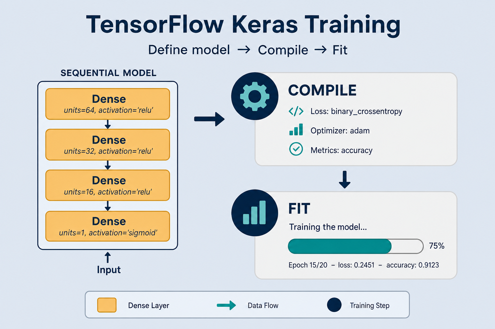
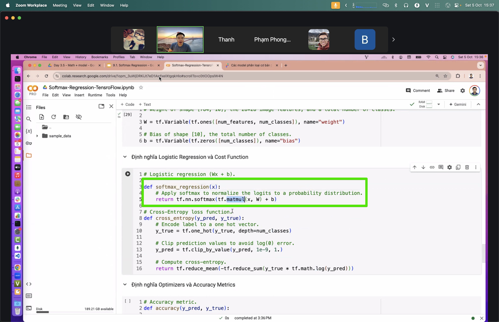

Train With TensorFlow / Keras
Same classifier lesson, declarative API: define the model, compile, then fit. You write the recipe; the kitchen runs it.
Why learn the Keras path
Declarative training
Describe model + settings; the framework runs the epoch loop.
Twin of PyTorch
Same learning idea in a different API shape — pick what fits the project.
Projector
Embedding Projector makes vector space visible in 3D while you train.
Key ideas
compile = how to learn
Optimizer, loss (softmax + CE), metrics like accuracy.
fit = run training
Framework handles batches, backprop — no manual backward/step.
Callbacks
EarlyStopping + ModelCheckpoint keep the best weights, not the last epoch.
Under the hood: still forward → loss → gradients → update. Read: notes/tensorflow-training.md
compile → fit as the training spine

You declare optimizer, loss, and metrics once; fit shuffles batches, updates weights, and prints val metrics each epoch.
Multi-class head in TensorFlow

Dense layers ending in NUM_CLASSES softmax units — the classic Keras classification recipe.
Embedding Projector: vectors in 3D

Project embeddings while training — color by class to spot clusters, outliers, and confused regions.
Skeleton: Sequential → compile → fit
What one fit run is doing
Small dense net
Ends in softmax with NUM_CLASSES units.
Each epoch
Shuffles batches, computes CE vs integer labels, updates weights.
EarlyStopping
When val_loss bottoms out, restore that checkpoint — ready for inference.
categorical vs sparse_categorical
| Label format | Loss | Example |
|---|---|---|
| One-hot vectors | categorical_crossentropy | [0, 1, 0] for class 1 |
| Integer class ids | sparse_categorical_crossentropy | 1 for class 1 |
| Mixed / wrong pair | Silent fail or error | Always match loss to label encoding |
Val rises while train falls — stop there

Numeric sketch: epoch 4 best (val_loss≈0.41); epoch 7 overfit (0.55). With patience=3 and restore_best_weights=True, Keras rolls back to epoch 4.
Deeper dive
from_logits vs softmax
Prefer linear last layer + SparseCategoricalCrossentropy(from_logits=True). Softmax-in-model is handy for predict; logits are safer to train.
tf.data beats giant NumPy
shuffle → batch → prefetch(AUTOTUNE) keeps the GPU fed. Full x_train in RAM or no prefetch → idle GPU.
GradientTape when fit is rigid
Custom loss / multi-optimizer: same four steps as PyTorch — tape → grads → apply_gradients.
Decision guide
| Situation | Prefer | Avoid / why |
|---|---|---|
| Quick multi-class baseline | Sequential + fit + EarlyStopping | Hand-rolled GradientTape before you need it |
Integer labels 0..C-1 | sparse_categorical_crossentropy | categorical_* without one-hot — shape/loss bugs |
| One-hot labels prepared | categorical_crossentropy | Sparse loss — wrong assumption on rank |
| Val loss rising after epoch 5 | EarlyStopping + restore best + Checkpoint | Fixed 50 epochs “just in case” |
| Non-standard loss / multi-opt | GradientTape (or PyTorch) | Stretching fit with opaque callback hacks |
| Embedding debugging / teaching | Projector colored by class | Unlabeled gray clouds |
Case Study
Softmax regression / small MLP for 5-class topic labels on bag-of-embedding features (8 000 train / 2 000 val).
Inputs
x_train shape [8000, 384], integer labels [8000], batch_size=64 → 125 steps/epoch; NUM_CLASSES=5.
Steps
Sequential Dense(64, relu) → Dense(5, softmax) → compile(Adam(1e-3), sparse_categorical_crossentropy, accuracy) → fit with EarlyStopping(val_loss, patience=3, restore_best_weights=True) + ModelCheckpoint.
Output
best epoch ~4 with val_accuracy≈0.81, val_loss≈0.48; later epochs overfit to val_loss≈0.61 but restore brings back epoch-4 weights automatically.
Verify
y_train.ndim == 1 (sparse, not one-hot); Projector colored by class shows cluster separation; reloading best.keras reproduces the same val accuracy within rounding.
Lab Checklist
Build a Sequential classifier and compile with the loss that matches your label encoding
Run fit with validation_data and read the epoch logs for rising val_loss
Add EarlyStopping + ModelCheckpoint; confirm restore/best file beats the last epoch
Swap sparse vs categorical loss once on purpose and note the error or nonsense loss scale
Log with TensorBoard and open the scalar curves for train vs val
(Optional) Launch Embedding Projector and color points by class label
Save a .keras model and reload it in a fresh Python process for inference-only predict
Write down one reason you would switch this baseline to an explicit PyTorch loop
Easy ways to go wrong
Wrong CE variant
One-hot vs integer — mixing them fails silently or loudly. Check y.ndim and y.max().
No validation_data
You only see train accuracy and miss overfitting.
No EarlyStopping
Last epoch may be worse than an earlier one.
Projector without labels
Color points by class — otherwise the cloud is hard to read.
Dataset → Keras checkpoint
Same target as pytorch-training — serving classification.md. Monitor the metric you care about (on imbalance, accuracy can plateau while CE still moves).
compile,
then fit.
notes/tensorflow-training.md — compare with pytorch-training for the imperative twin.
Open note →